从“肉眼所见皆为虚”到宇宙的信息边界：感知、全息、量子与意识（一）
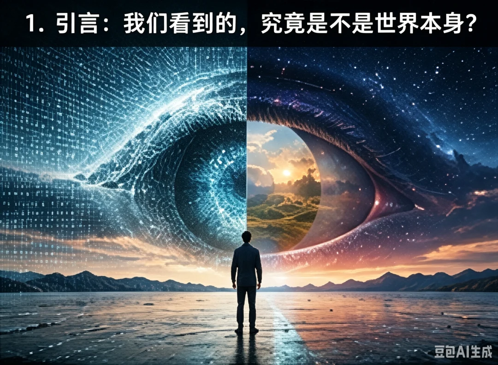
1.引言：我们看到的，究竟是不是世界本身？
“肉眼所见皆为虚”乍听像一句玄学。
如果眼睛看到的东西都是“虚”，那么眼前的桌子、树木、山河、星辰，难道都不存在吗？
当然不是。
这句话真正值得思考的地方，不是“世界不存在”，而是：
我们所体验到的世界，并不等于世界本身。
眼睛看到的，是光经过物体反射后进入视网膜形成的信号；耳朵听到的，是空气或水中的压力变化；鼻子闻到的，是分子与受体相互作用产生的神经信号。
最终，我们所体验到的“世界”，是大脑根据这些输入建立起来的一种内部模型。
这件事情一旦想清楚，就会出现一个非常奇妙的问题：
如果每一种生物都是通过自己的感官系统和神经系统“生成”一个世界，那么我们所谓的现实，会不会本质上就是信息经过某种结构重新组织之后的结果？
从这里出发，我们可以一路走向预测编码、全息原理、量子信息、黑洞，甚至意识和宇宙本身。
这条路很大胆，但也必须保持一个基本原则：
哪些是已经建立的科学，哪些是合理的推测，哪些只是哲学假设，必须始终分清。
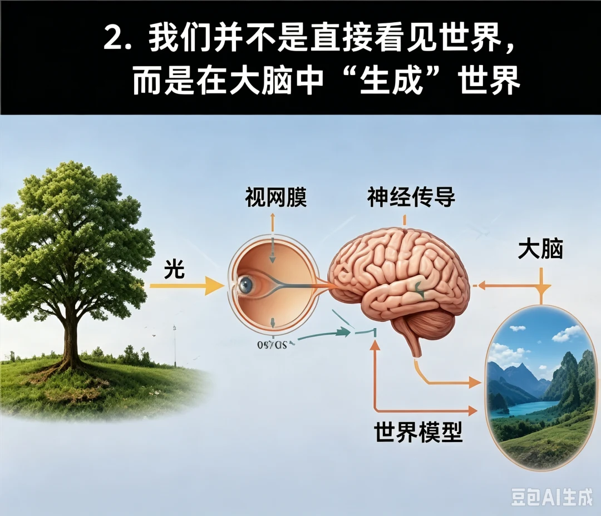
2.我们并不是直接看见世界，而是在大脑中“生成”世界
想象一个人站在树前。
我们通常会认为：
“我看到了那棵树。”
但从物理过程来看，并不是“树”进入了大脑。
真正发生的是：
太阳光照射树木 → 树叶和树干反射、吸收不同波长的光 → 光进入眼睛 → 经过角膜、晶状体 → 投射到视网膜 → 光感受器产生神经信号 → 神经网络进行加工 → 大脑形成“那里有一棵树”的知觉。
因此，大脑真正接收到的不是“树”，而是某种经过物理过程编码后的信息。
更有意思的是，视网膜本身只是二维的。
然而我们体验到的世界却是三维的：
- 有远近；
- 有深度；
- 有形状；
- 有运动；
- 有遮挡关系。
也就是说：
大脑从有限的、低维的感官信息中，重建出了一个高维的空间世界。
这已经非常接近一个“逆问题”。
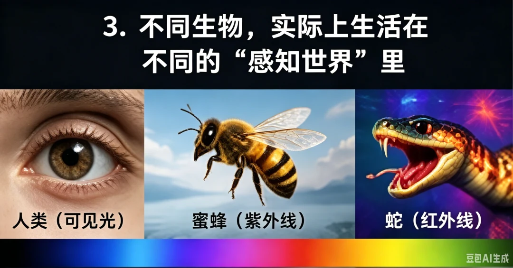
3.不同生物，实际上生活在不同的“感知世界”里
如果把这个思想继续推开，就会发现：
所谓“世界”，对于不同生命而言，并不是完全相同的体验。
人类是高度依赖视觉的动物。
我们习惯于认为：
看见，就是知道。
但对于其他动物，这个假设并不成立。
蜜蜂能够感知紫外线。对人类而言普通的花，在蜜蜂的感知世界中可能具有完全不同的视觉结构。
蛇能够感知红外辐射。
某些动物能够对电场极其敏感。
蝙蝠通过回声定位获得空间信息。
齿鲸也能够利用回声定位，而须鲸则主要依靠听觉和其他感知方式，并不能简单归入“用声呐看世界”。
因此可以做一个非常形象的比喻：
人类通过光构造世界，蝙蝠通过回声构造空间，某些蛇把温度分布纳入世界模型，其他动物则通过完全不同的信号建立自己的现实。
它们并不是生活在不同的宇宙。
而是在：
同一个物理宇宙中，运行不同的“信息解码器”。
所以，“现实”至少可以分成两个层面：
客观存在的物理过程
以及
生命系统对这些过程形成的经验模型。
这两者不能简单画等号。
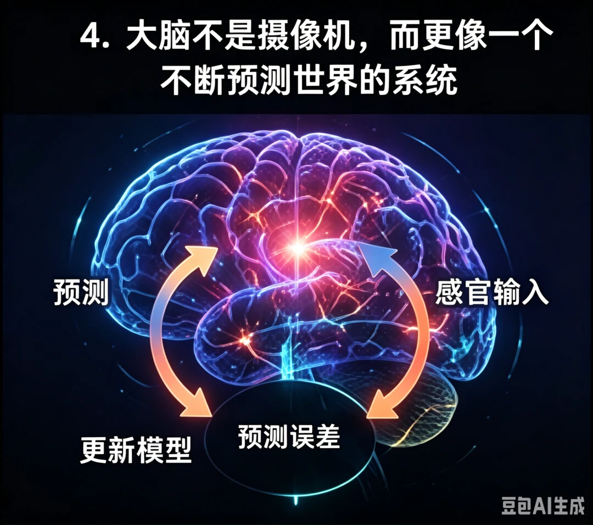
4.大脑不是摄像机，而更像一个不断预测世界的系统
传统直觉认为：
外界刺激 → 大脑接收 → 形成知觉。
现代神经科学中一个非常重要的思想，则更加主动：
大脑不是单纯接收世界，而是在不断预测世界。
例如你远远看到一个模糊的人影。
你的眼睛获得的信息可能非常有限。
但你可能马上判断：
“那是一个人。”
为什么？
因为大脑并不是从零开始处理每一个像素，而是在利用过去的经验建立假设：
“在这种场景下，出现一个人的概率很高。”
然后新的感官信息不断回来：
预测 → 感官输入 → 预测误差 → 修正模型 → 新预测。
于是我们看到的世界，并不是单纯由外界输入决定的。
它是：
外部信息与内部模型共同作用的结果。
这也解释了为什么同一件事情，不同的人可能产生完全不同的体验。
我们看到的并不只是对象，还包含：
- 记忆；
- 经验；
- 期待；
- 情绪；
- 注意力；
- 概念。
所以，大脑更像一台不断运行的“世界生成器”。
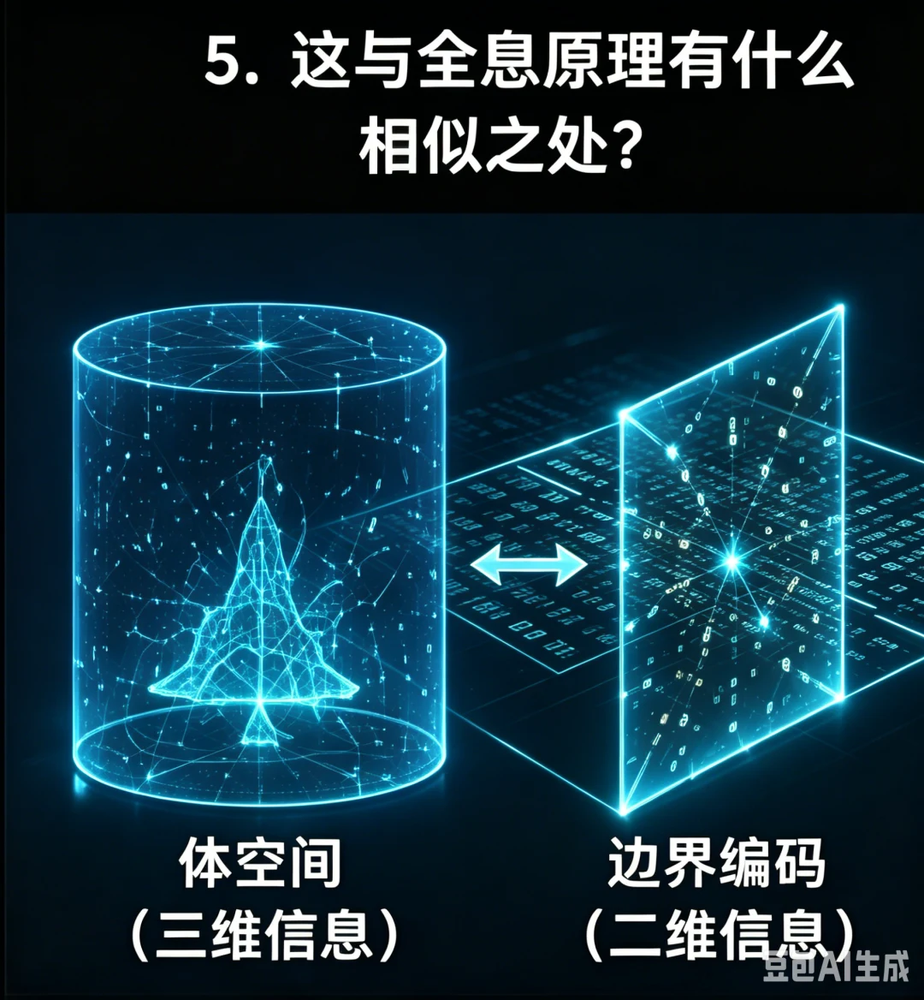
5.这与全息原理有什么相似之处？
到了这里，就可以进入我们讨论中最有意思的连接。
物理学中的全息原理提出了一个非常反直觉的思想：
一个空间区域中的物理信息，原则上可以由其低维边界上的信息描述。
它最深刻的来源之一，是黑洞热力学：黑洞熵只与事件视界的面积有关。
注意这里最惊人的地方：
通常我们直觉认为，一个三维空间能够容纳的信息应该和体积有关。
但黑洞告诉我们：
最大的信息容量只与面积有关。
于是产生了“全息原理”。
它并不是说：
“宇宙其实就是一张二维照片。”
而是说：
描述一个区域全部物理信息所需要的自由度，可能可以由它的低维边界来编码。
后来在特定的理论框架中，AdS/CFT 对偶把这种思想发展成了非常精确的数学对应：
一个具有引力的高维“体空间”，与一个低一维的量子场论之间存在对偶描述。
这里的“对偶”不是“一个东西复制另一个东西”，而是：
同一个物理内容可以用两套看起来完全不同的理论描述。
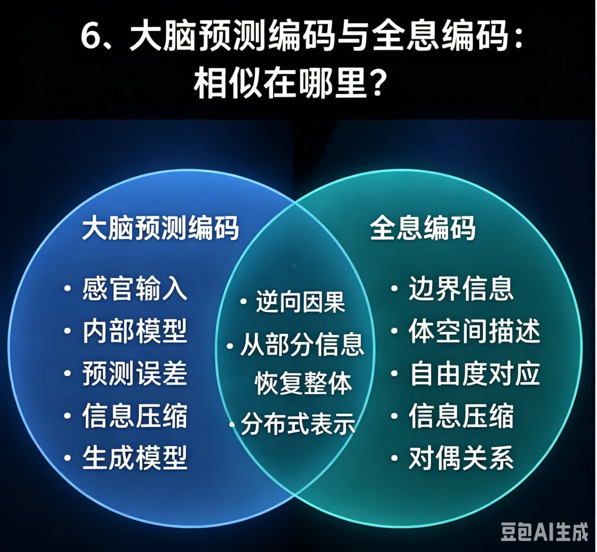
6.大脑预测编码与全息编码：相似在哪里？
现在可以把两者放在一起。
大脑面对的问题：
已知有限的感官输入，如何恢复一个外部世界模型？
全息理论面对的问题：
已知边界上的信息，如何描述体空间中的物理状态？
两者都具有一个共同的数学味道：
从部分信息、边界条件或低维表示，恢复隐藏的整体结构。
可以抽象成：
编码信息-->隐藏结构
对于大脑：
感官输入-->世界模型
对于全息：
边界量子信息-->体空间描述
这两者都属于某种“逆问题”。
(未完待续)
从“肉眼所见皆为虚”到宇宙的信息边界（二）
(续前文)
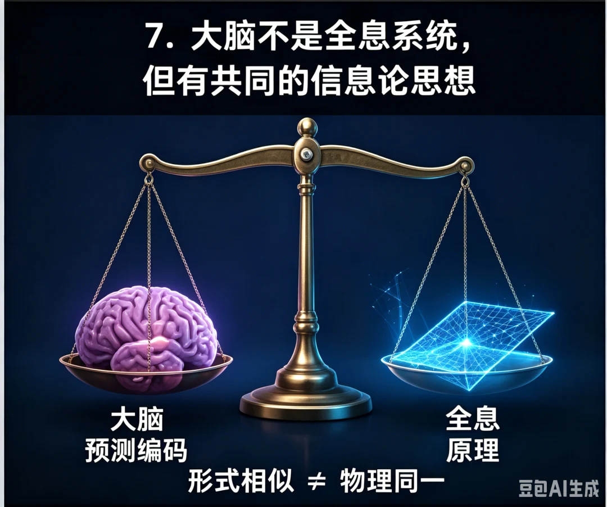
7.但不能因此说“大脑就一定是一个全息系统”
这里必须踩一下刹车。并非是对该命题的否认，而是目前没有证据。相关研究迄今为止仅停留在假说阶段。
当下的学科前沿均没有证据证明人思维是量子化的。因此大脑预测编码和物理学全息原理，目前没有被证明具有直接的数学同构关系。
它们相似的是：
- 信息压缩；
- 隐变量；
- 边界/输入约束；
- 从有限信息恢复整体；
- 分布式信息；
- 生成模型。
但它们回答的问题不同。
预测编码主要研究：
生命如何从感官信息形成对世界的内部模型。
全息原理研究：
物理系统的自由度如何在不同维度的描述之间对应。
一个主要属于认知科学和神经科学。
另一个属于量子引力和理论物理。
所以比较二者最稳妥的说法不是：
“大脑就是宇宙全息原理的缩小版。”
而是：
它们可能体现了一种共同的信息论思想：整体结构可以通过分布式的关系和有限的约束信息被重建，而不必逐点复制整个整体。
这已经足够令人惊奇。
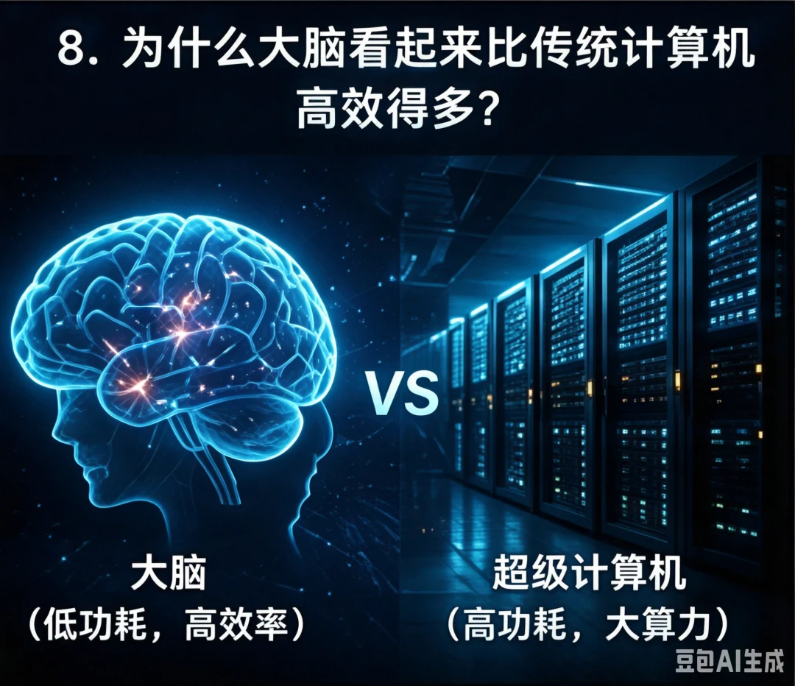
8.为什么大脑看起来比传统计算机高效得多？
这又把我们带到另一个问题：
如果大脑也在“计算世界”，为什么它不需要像超级计算机那样消耗巨大能量？
人脑大约只有一个很有限的功率预算，却可以完成：
- 视觉识别；
- 语言理解；
- 空间导航；
- 社交推理；
- 运动控制；
- 记忆；
- 学习。
传统计算机如果采用非常粗暴的方式去模拟一个复杂世界，需要巨大的计算资源。
但生物系统并没有这么做。
大脑并没有计算：
“世界上每一个粒子现在在哪里。”
它采用的是高度压缩的世界模型。
看到一个苹果时，并不需要计算苹果的每个原子。
它只需要识别：
一个符合“苹果”这个概念的结构。
所以大脑的效率可能来自：
- 稀疏编码；
- 分布式编码；
- 并行处理；
- 预测；
- 反馈；
- 层级模型；
- 信息压缩；
- 身体与环境的直接耦合。
这里有一个非常重要的观点：
大脑可能根本不是在“模拟整个世界”，而是在寻找对当前生存任务最有用的世界表示。
这与计算机从第一性原理暴力模拟完全不同。
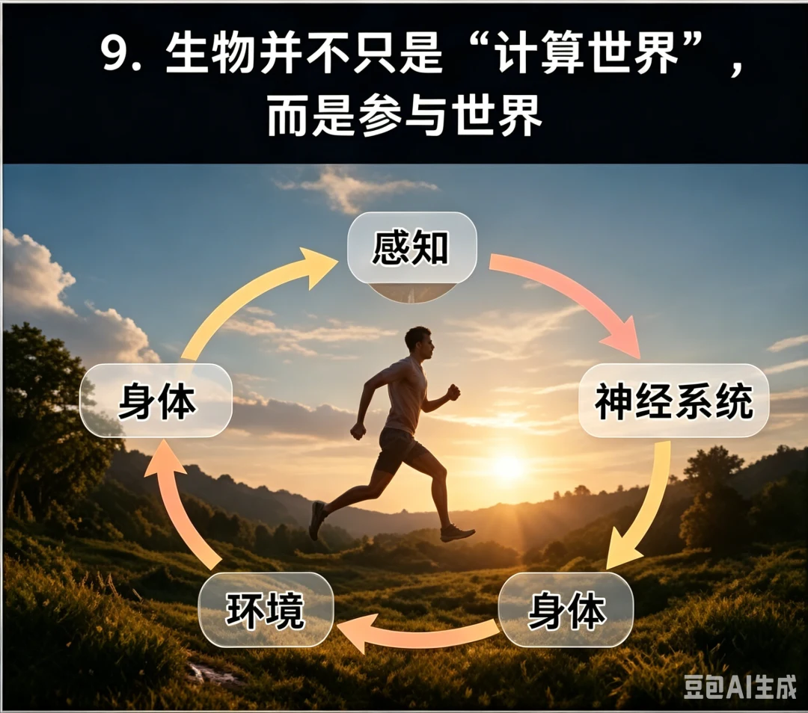
9.生物并不只是“计算世界”，而是参与世界
这是理解生命系统效率的一个关键。
计算机通常可以被抽象成：
输入 → 计算 → 输出。
而生物系统更像：
环境 ↔ 身体 ↔ 神经系统 ↔ 行为 ↔ 环境。
例如鸟飞行。
鸟并不会先在大脑中完整求解空气动力学方程，然后再计算下一次翅膀应该怎么扇。
它的身体形态、肌肉、神经系统和环境共同形成一个动态系统。
因此，一部分“计算”实际上被：
物理结构本身承担了。
这就是具身性的重要思想。
生命不是站在世界外面计算世界。
生命本身就是世界的一部分。
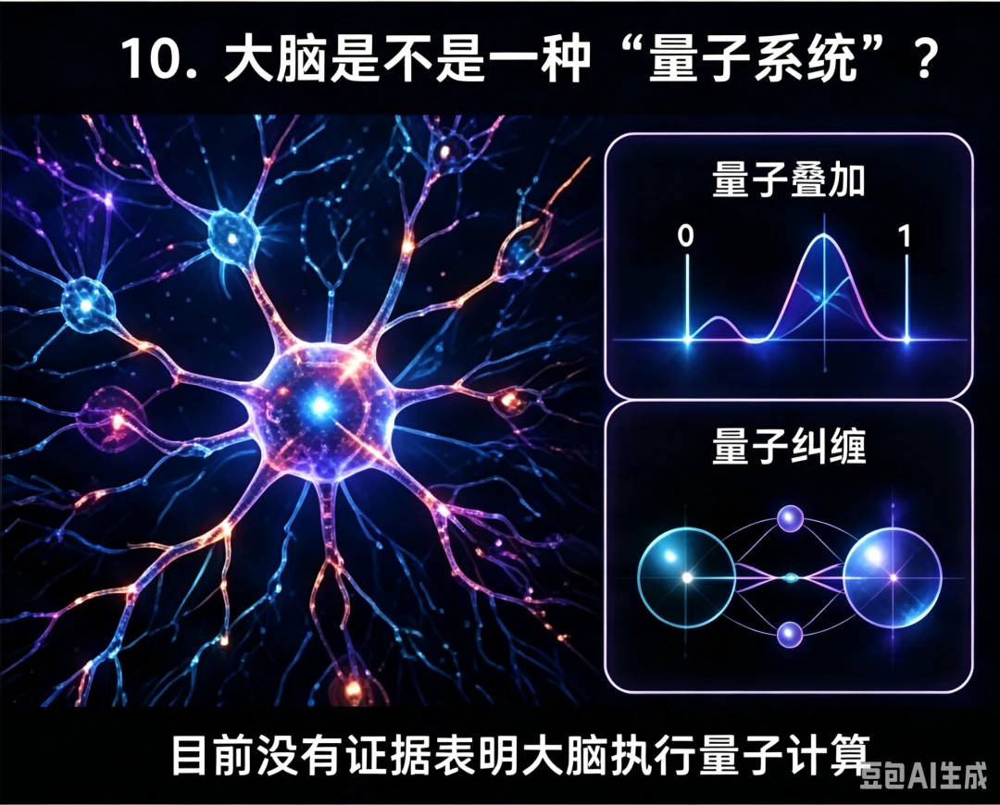
10.那么，大脑是不是一种“量子系统”？
这时候很容易产生一个大胆的推论：
大脑这种整体性、分布式、自组织的信息结构，会不会本质上就是量子化的？
必须区分两个意思。
如果说“量子化”是严格的物理含义：
大脑通过量子叠加和量子纠缠执行主要的认知计算。
那么目前没有充分证据。
大脑是一个温暖、潮湿、强烈相互作用的生物系统，宏观量子相干非常难维持。
确实存在一些量子生物学现象，但这与“意识主要是量子计算”是两回事。
然而，如果“量子化”指的是一种更宽泛的信息组织直觉：
信息不是简单地一个比特接着一个比特排列，而是通过大量关系、关联、整体状态和概率结构组织起来。
那么大脑确实表现出了许多非常值得注意的类似特征：
- 分布式信息；
- 非线性；
- 整体涌现；
- 强反馈；
- 状态依赖；
- 大规模并行；
- 自组织。
所以更严谨的说法是：
大脑未必是量子计算机，但它显然也不是我们想象中的那种简单串行图灵机。
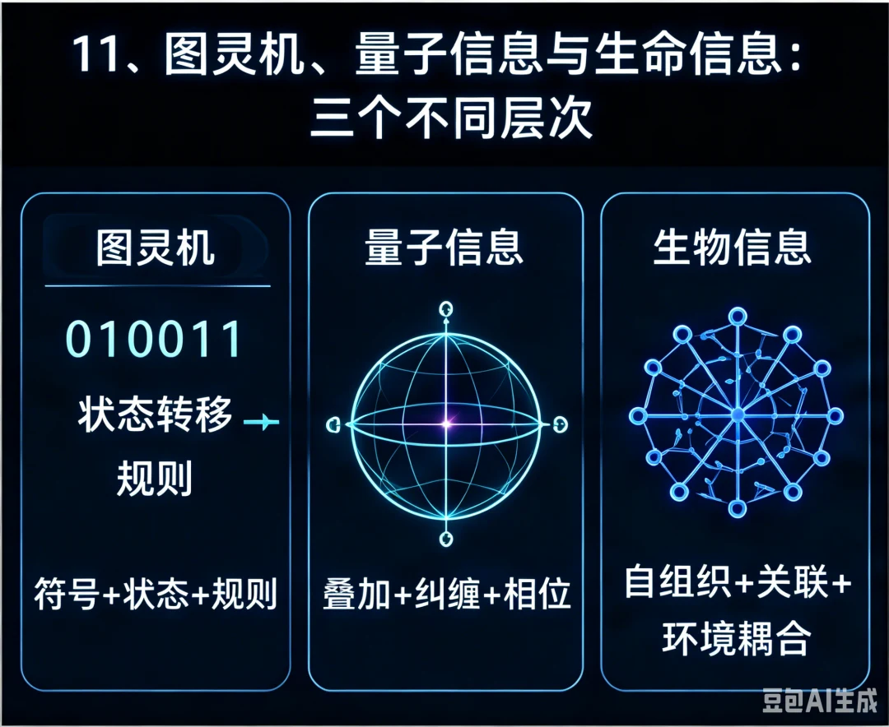
11.图灵机、量子信息与生命信息：三个不同层次
可以把三种信息组织方式粗略地放在一起。
经典图灵机
核心是：
符号 + 状态 + 规则。
典型形式：
二进制符号-->状态转移-->二进制符号
它非常适合描述：
- 算法；
- 逻辑；
- 程序；
- 离散计算。
量子信息
核心不是简单的“0或1”，而是量子态以及不同状态之间的关系。
量子系统具有：
- 叠加；
- 纠缠；
- 相位；
- 测量。
因此信息不能简单地理解成一个个独立比特。
生物信息
生命系统更进一步。
信息不仅存在于神经元内部，还存在于：
- 神经元之间；
- 身体与环境之间；
- 基因与环境之间；
- 感知与行动之间。
生命的计算过程和它自身的物理结构密不可分。
因此可以提出一个很有启发性的比较：
图灵机更像“执行程序”；量子系统更像“演化关系”；生命系统更像“通过自组织与环境共同形成状态”。
这三者不能简单等同，但确实代表了三种不同的信息组织直觉。
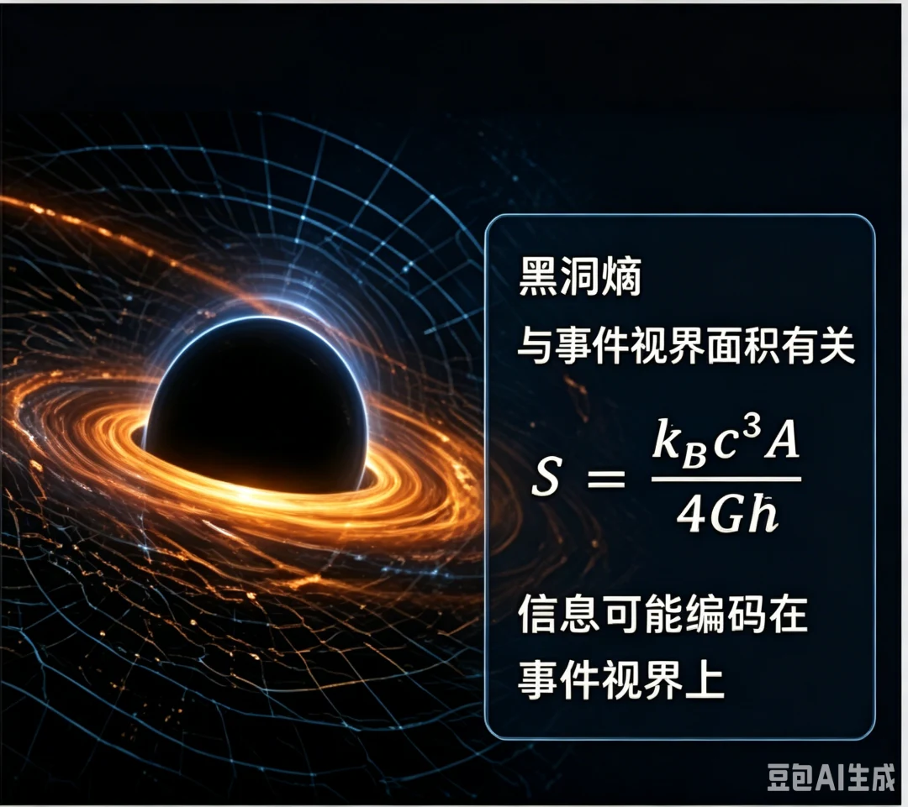
12.黑洞会有意识吗？
当我们讨论全息原理时，黑洞是无法绕开的。
黑洞最令人震撼的地方之一，是它把：
引力、热力学、量子力学、信息
联系到了一起。
尤其是黑洞信息问题。
如果一个物体掉进黑洞，它的信息究竟去了哪里？
如果信息真的消失，就会冲击量子力学的基本原则。
如果信息没有消失，那么它究竟以什么形式存在？
全息原理提供了一种令人惊讶的可能：
黑洞内部的信息，可以由事件视界上的量子自由度描述。
于是我们之前讨论的“边界编码”就有了物理意义。
既然黑洞提供了信息的某种组织形式，那么自然而然就会产生一个大胆的猜想：黑洞会有意识吗？
(未完待续)
从“肉眼所见皆为虚”到宇宙的信息边界（三）：虚幻与真实
（续前文）
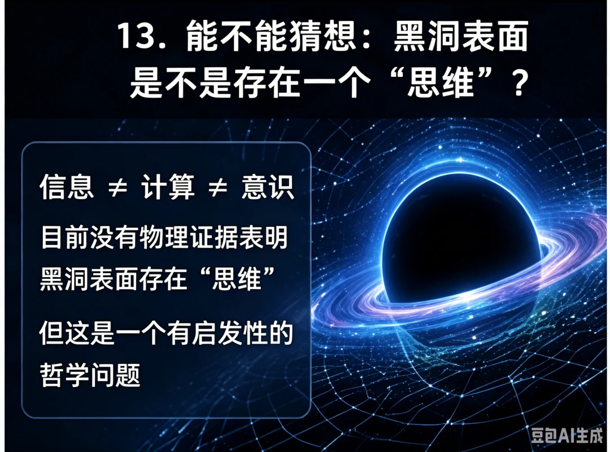
13.能不能进一步猜想：黑洞表面是不是存在一个“思维”？
这是我们讨论中最大胆的一步。
如果：
边界信息能够描述体空间，
那么是否意味着：
边界上有一个类似大脑的东西，在“生成”内部世界？
答案是：
没有这样的物理证据。
这里必须区分：信息、计算和意识的区别。
硬盘里有信息。
程序可以处理信息。
但这并不意味着硬盘本身具有意识。
因此：
全息原理不能推出黑洞表面存在一个“观察者”。
但是作为哲学问题，它非常有意思。
因为它迫使我们问：
信息组织到什么程度，才会产生“观察者”？
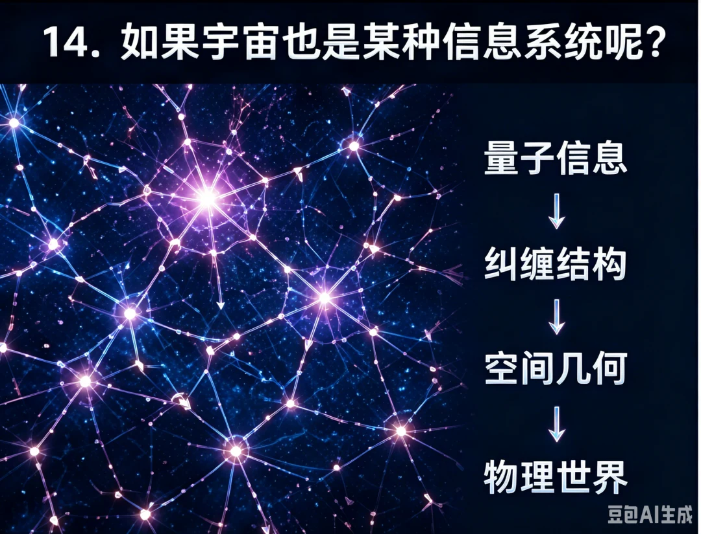
14.如果宇宙也是某种信息系统呢？
再向前走一步：
如果物理世界的深层结构确实可以用量子信息描述，那么是否可以说：
宇宙本质上不是“物质”，而是“信息关系”？
这是一个非常活跃、但仍然没有最终答案的思想方向。
在这个视角下：
- 粒子是状态；
- 相互作用是关系；
- 量子纠缠是关联；
- 空间可能是关系结构；
- 引力可能与信息结构有关。
于是可以提出一个非常大胆的图景：
量子信息-->纠缠结构-->空间几何-->物理世界
这并不是已经完成的宇宙理论，而是现代量子引力研究中值得关注的一类思想。
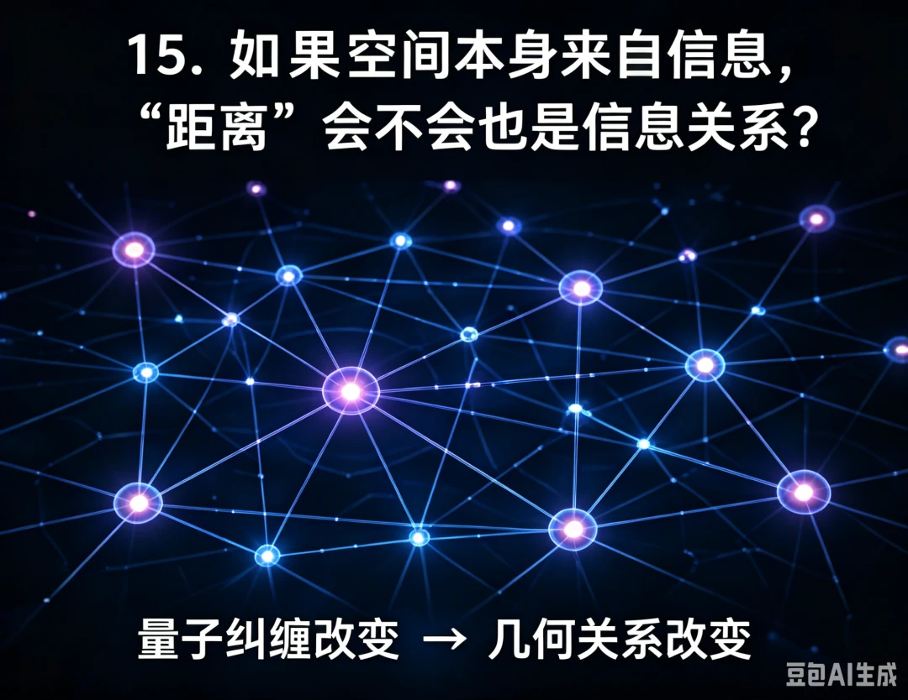
15.如果空间本身来自信息，那么“距离”会不会也是信息关系？
我们通常认为：
空间先在那里，然后物体存在于空间中。
但在某些量子引力思想中，可能恰恰相反：
空间的几何关系，是更底层信息关系的涌现。
如果两个系统之间的量子纠缠关系改变，那么某种意义上的“几何距离”也可能发生变化。
这就是为什么现代量子引力研究中，“纠缠—几何”关系如此重要。
因此，“长度”并不一定只是一个被动的测量结果。
在更深的理论中：
长度本身可能是物理信息结构的一种表现。
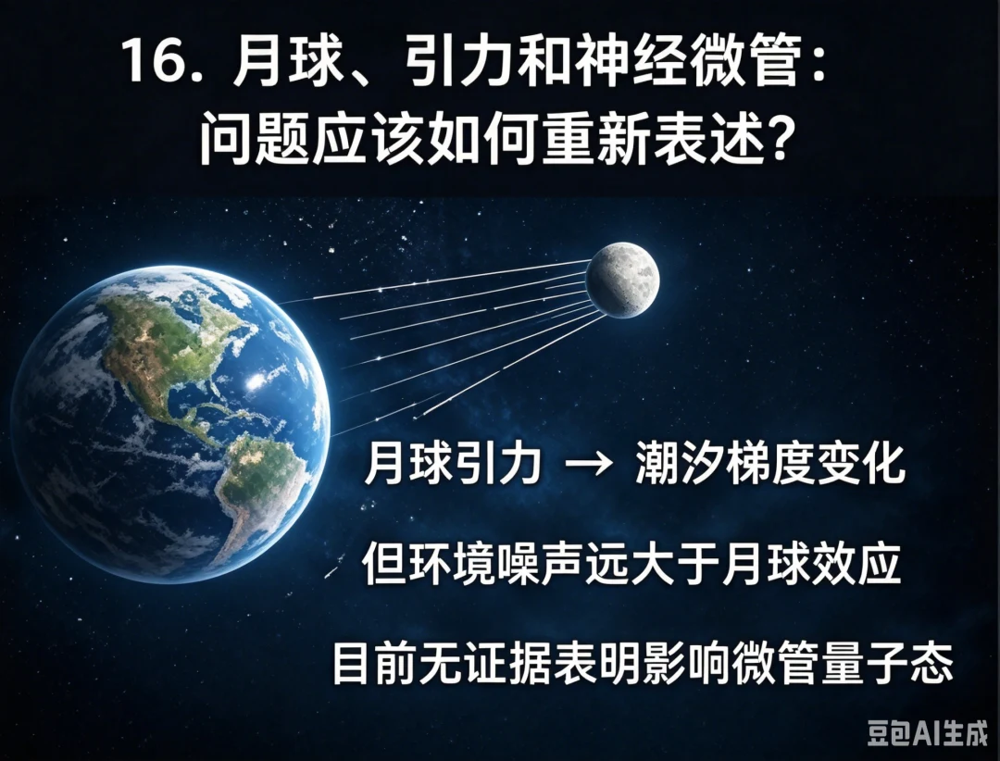
16.月球、引力和神经微管：问题应该如何重新表述？
于是我们又回到了一个看似完全不同的问题：
月相变化造成的引力扰动，会不会影响神经微管中的量子效应？
这里需要非常谨慎。
月球确实对地球产生引力。
而且月球在不同位置造成的并不只是一个简单的“力”，还存在潮汐梯度。
地表同一地点相对于月球的位置变化，会使月球引力的方向和大小发生周期性变化，海洋的潮汐效应便是由此而来。太阳月亮与地球的相对位置，也会造成类似的影响。
所以下面的命题成立。
地表的引力场结构，随着月球围绕地球公转和地球自转所处的不同位置不同而改变。
但这并不意味着：
月球的潮汐引力足以显著改变神经微管中的量子态。
因为在微观尺度上，还存在大量更强的因素：
- 热噪声；
- 分子碰撞；
- 电磁相互作用；
- 化学环境；
- 神经活动。
因此，“月球引力直接驱动微管量子意识”目前没有可靠证据支撑。同样的，这也不代表对该命题的否认。
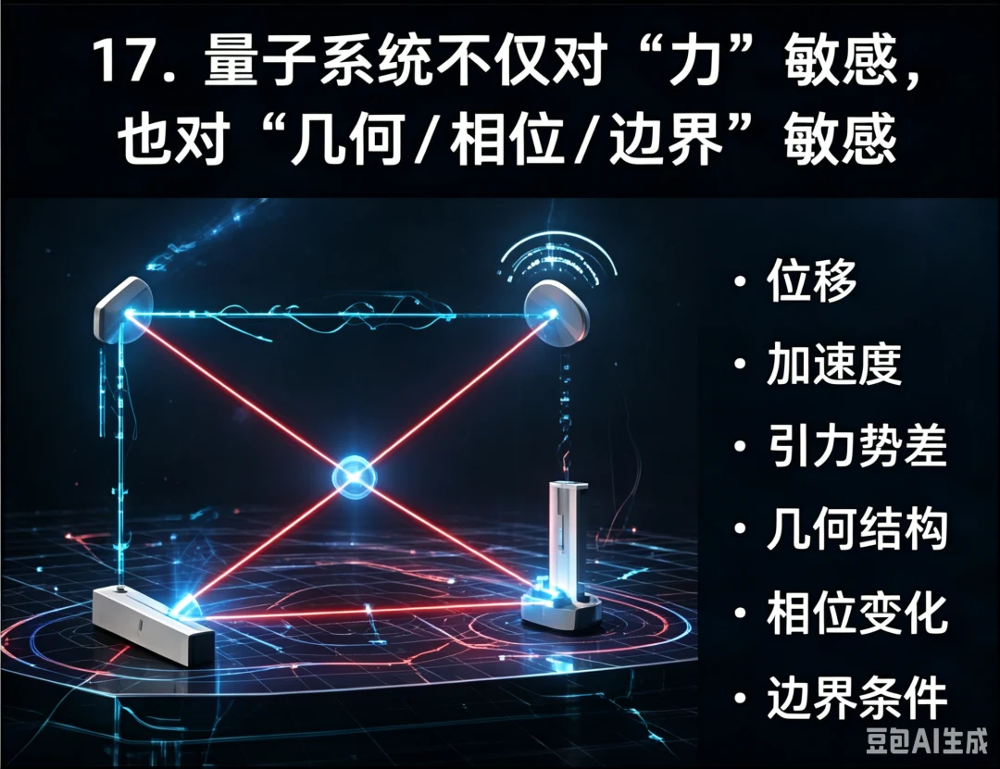
17.一个非常重要的修正：量子系统不仅对“力”敏感
这是值得保留的思想。
量子系统不仅可以受到力的影响，也可以对：
- 势能；
- 相位；
- 边界条件；
- 几何结构；
- 时间尺度；
- 环境耦合
产生响应。
例如量子干涉实验可以对极微小的：
- 位移；
- 加速度；
- 引力势差
产生响应。
广义相对论又告诉我们：
引力不仅可以理解为一种“力”，还可以理解为时空几何。
因此，从理论上讲：
如果空间几何发生变化，量子态原则上可能受到影响。
但“原则上可能”与“在大脑里足够大”是两回事。
这是科学推理中非常重要的尺度意识。
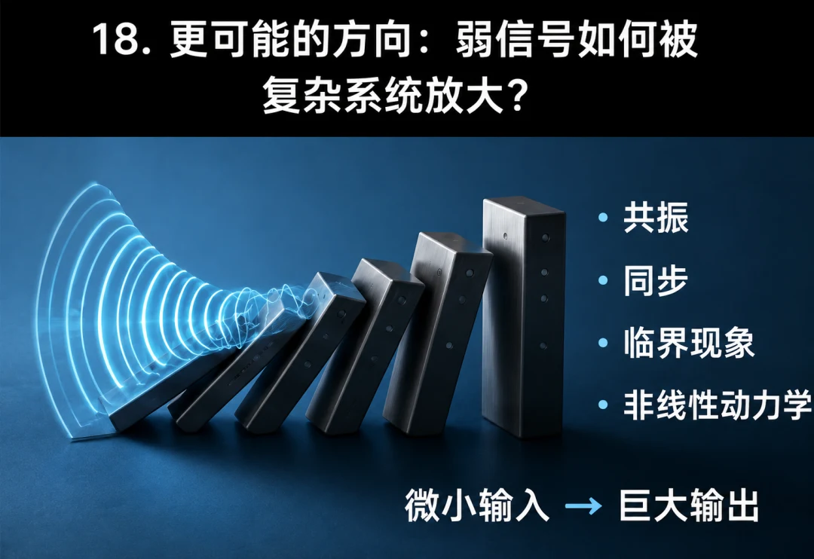
18.真正值得研究的可能不是“月球拉动微管”，而是“弱信号如何被复杂系统放大”
这里出现了一个比月球引力本身更有趣的问题。
复杂系统有一种非常奇妙的性质：
一个很弱的输入，有时可以引起非常大的输出。
例如：
- 共振；
- 同步；
- 临界现象；
- 正反馈；
- 非线性动力学。
一颗小石头本身没有巨大的能量。
但如果山坡已经处于临界状态，它可能触发雪崩。
同理：
如果一个生物系统本身处于某种高度敏感的动态状态，那么一个微弱周期信号是否可能成为“触发器”？
这是一个比：
“月球引力是不是足够大？”
更值得研究的问题。
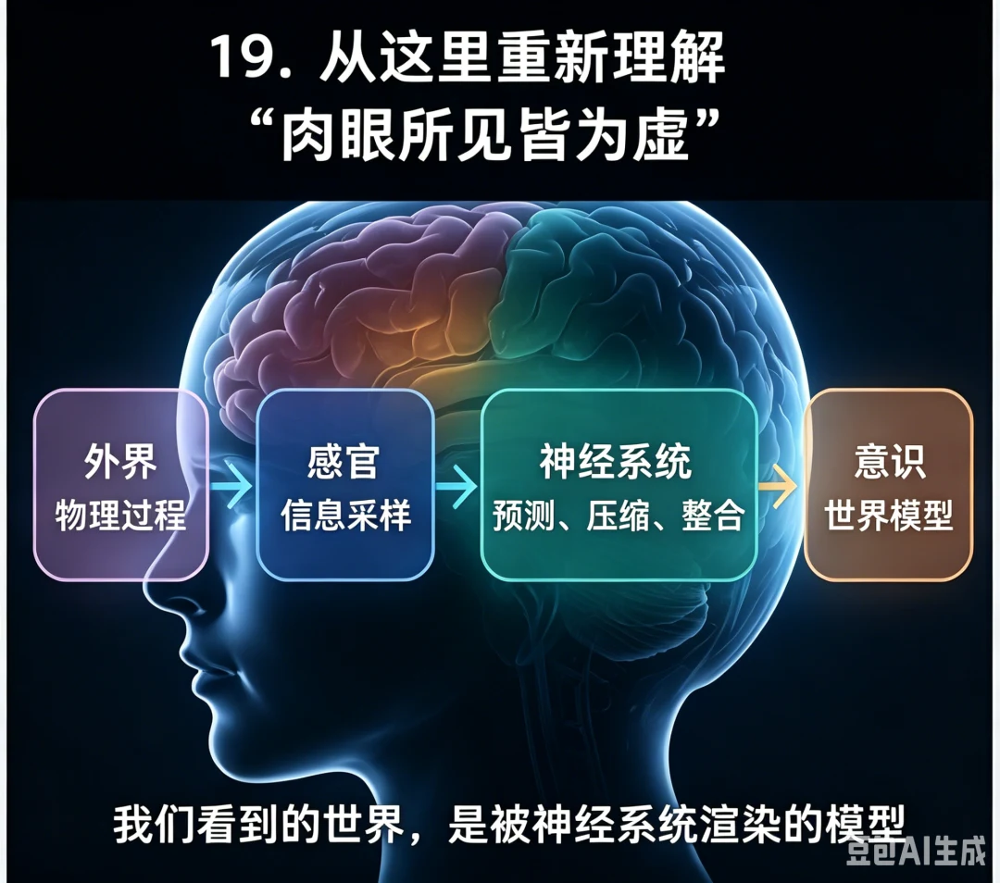
19.从这里重新理解“肉眼所见皆为虚”
现在回到最开始那句话。
“虚”并不是：
世界不存在。
而更接近：
我们所执着的“世界”，只是现实经过感官、神经系统、认知结构之后形成的一种呈现。
这与现代科学有一个非常有趣的对应：
外界：物理过程
↓
感官：信息采样
↓
神经系统：预测、压缩、整合
↓
意识：世界模型
因此：
我们经验中的世界，是一个被神经系统实时渲染出来的世界。
这并不意味着它是假的。
恰恰相反：
它是生命为了生存而建立的、极其有效的现实模型。
（未完待续）
从“肉眼所见皆为虚”到宇宙的信息边界（四）：世界开始的地方
（接上文）
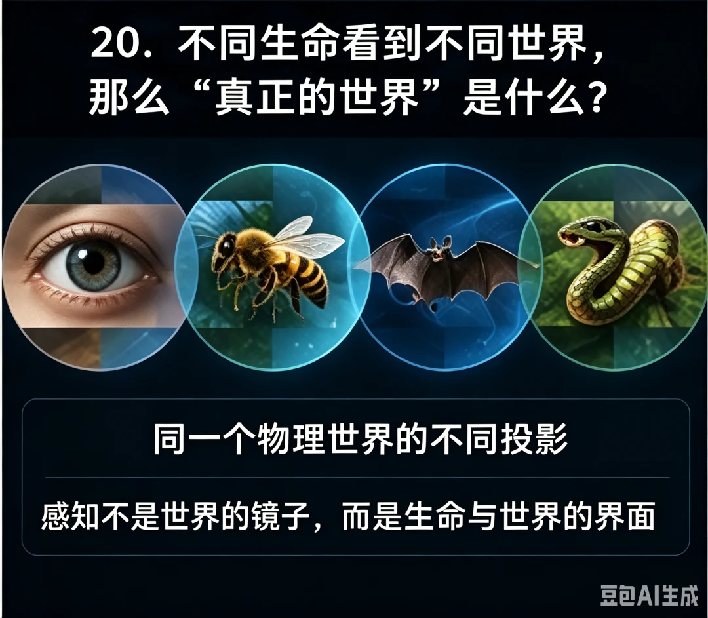
20.不同生命看到不同世界，那么“真正的世界”是什么？
这是哲学真正开始介入的地方。
如果：
- 人类看到的七彩世界；
- 蜜蜂看到的要加上紫外线；
- 蝙蝠还可以通过回声感知空间；
- 蛇能够额外感知到红外世界；
- 其他某些动物能够感知到电磁场的世界；
那么：
哪个才是真实的世界？
答案可能是：
它们都是同一个世界的不同投影。
没有任何一个生命系统能够把整个宇宙直接装进自己的感官。
每一种生物都拥有一套有限的接口。
因此：
感知不是世界的镜子，而是生命与世界之间的界面。
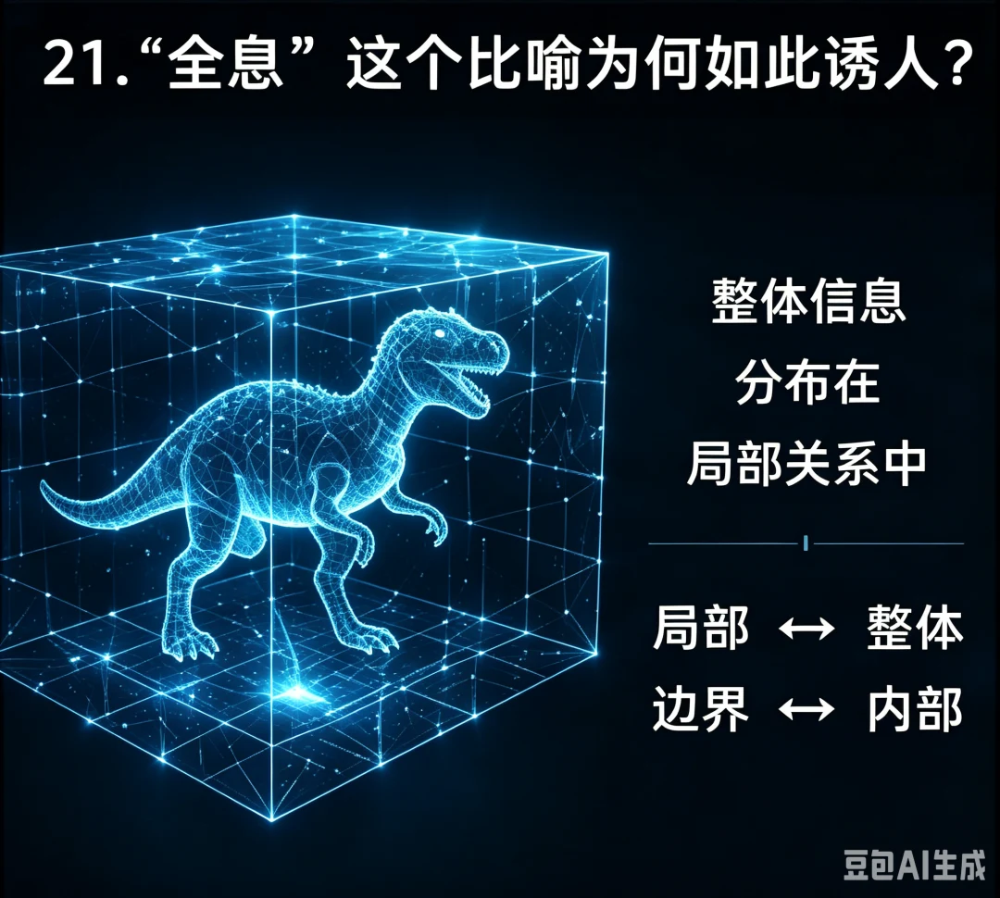
21.为什么“全息”这个比喻如此诱人
全息图有一个很漂亮的特性：
整体图像的信息并不是简单地储存在某一个像素里。
它被分布在整个结构的关系中。
大脑中的记忆也不是简单地：
“一个神经元 = 一段记忆。”
很多认知内容依赖大规模神经网络的关系。
所以我们可以看到一种形式上的相似：
局部-->整体
边界-->内部
感官输入-->世界模型
但再次强调：
形式相似并不等于物理同一。
这是整个问题需要保持清醒的地方。
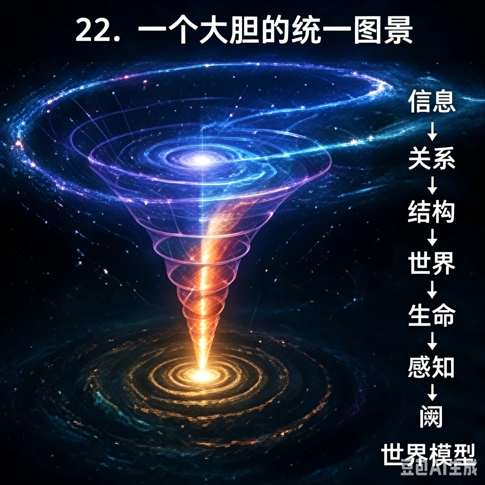
22.一个更大胆的统一图景
如果把我们一路讨论的思想全部放在一起，可以构造出一个非常大胆的哲学模型：
信息-->关系-->结构-->世界-->生命-->感知-->世界模型
在宇宙尺度：
量子信息之间的关系可能与空间结构、几何乃至引力存在深刻联系。
在生命尺度：
感官信息经过神经系统的预测、压缩和整合，形成一个可供生命行动的世界模型。
于是生命就像是在宇宙内部建立了一个局部的“世界重建器”。
但这并不意味着生命创造了新的宇宙。
而是：
宇宙中的一部分物质，通过复杂的信息组织，获得了对宇宙其他部分的内部表征。
这已经足够令人神往。
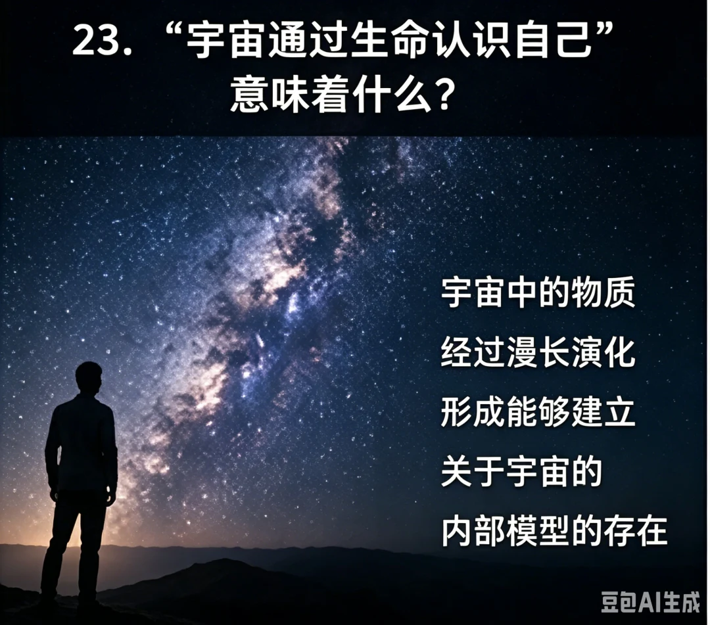
23.“宇宙通过生命认识自己”意味着什么？
这句话经常被说得很诗意，但它其实可以有一个非常朴素的理解。
宇宙早期没有：
- 眼睛；
- 耳朵；
- 神经系统；
- 意识。
后来经过漫长的物理和生物演化：
物质形成恒星；
恒星形成重元素；
行星形成复杂化学环境；
化学系统出现自组织；
生命出现；
神经系统出现；
意识出现。
于是：
宇宙中的某些物质开始建立关于宇宙的内部模型。
一个人抬头看星空。
从物理角度：
是宇宙中的物质在观察宇宙中的其他物质。
从意识角度：
是宇宙的一部分开始形成关于整个宇宙的表征。
这句话没有必要被理解成神秘主义。它可以只是一个极其优美的自然主义事实。
所以，生物的大脑天然是一个世界模型。
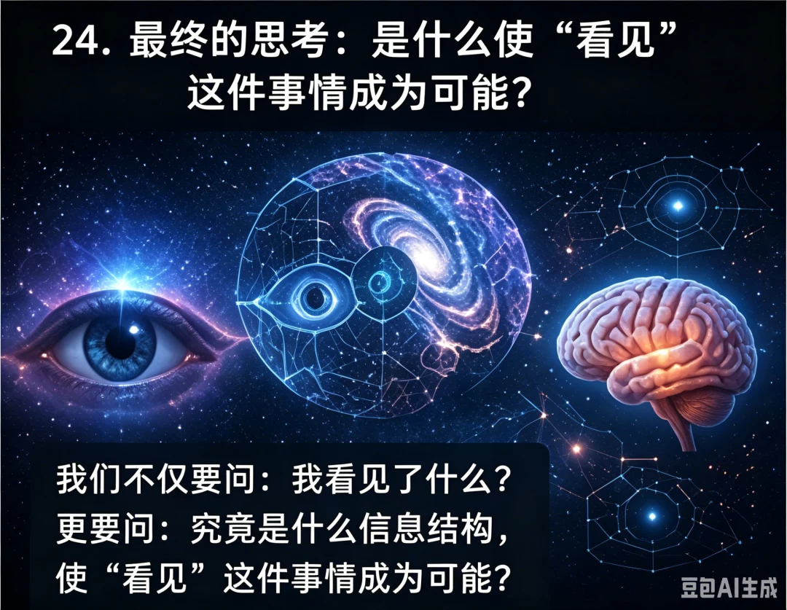
24.宇宙是否真的有意识？
从这里不能直接得出结论：
宇宙本身具有一个统一的意识。
这是另一个完全不同的假设。
它至少需要先回答：
- 什么叫意识？
- 它的载体是什么？
- 信息如何整合？
- 如何产生统一体验？
- 是否存在可观测预测？
- 如何区别于“宇宙中存在很多意识”？
有了这些答案，我们才能更清晰地增进对宇宙的了解。而我们目前，连第一个问题的答案是什么都没有搞清楚。
我们一路讨论下来，其实可以形成四层结构。
第一层：物理世界
有：
- 粒子；
- 场；
- 能量；
- 时空；
- 量子态。
第二层：信息结构
物理系统之间存在：
- 关联；
- 纠缠；
- 因果关系；
- 边界条件；
- 信息约束。
在某些量子引力理论中，空间和几何甚至可能与这些关系存在深层联系。
第三层：生命系统
生命利用：
- 感官；
- 神经网络；
- 身体；
- 记忆；
- 预测模型
从环境中提取与自身生存有关的信息。
第四层：意识
最终出现：
“这里有一个世界，而且我正在这个世界里。”
于是最令人惊讶的事情发生了：
世界中的一个局部系统，开始拥有一个关于整个世界的内部模型。
25.结语：我们看到的世界，究竟是谁“生成”的？
现在再回头看：
“肉眼所见皆为虚。”
这句话就有了完全不同的含义。
它不是叫我们闭上眼睛否认世界。
而是在提醒：
不要把自己的世界模型误认为世界本身。
我们看到的是光经过感官系统之后形成的世界。蝙蝠听到的是声波构成的世界。蜜蜂看到的是包含紫外信息的世界。
大脑则把这些有限信息与过去的经验、预测和身体状态结合起来，形成一个连续的现实体验。
而现代物理又在另一端提出了更加惊人的问题：
如果空间本身也可能是更底层量子信息关系的涌现，那么我们所谓的“世界”是不是同样不是最底层的东西？
于是两条看似毫无关系的道路开始出现某种遥远的呼应：
量子信息-->物理结构
以及：
感官信息-->意识中的世界
前者可能是在问：
宇宙如何从信息形成空间？
后者则是在问：
生命如何从信息形成世界？
目前我们没有理由断言二者是同一个机制。
但也许它们共同指向了一个更加普遍的问题：
现实究竟是由“东西”组成的，还是由“关系”组成的？
如果未来证明空间可以从量子信息关系中涌现，那么我们对“物质”的理解会完全不同。
如果未来进一步理解意识如何从神经系统的信息关系中涌现，那么我们对“观察者”的理解也会发生颠覆性变化。
而如果有一天，这两件事情能够被放进同一个数学框架，那么我们可能终于能够回答一个古老得不能再古老的问题：
为什么这个宇宙不仅存在，而且能够在自己的内部产生能够认识它的存在？
也许那时候，“肉眼所见皆为虚”就不再是一句让人逃离现实的话。
它反而会成为一句提醒：
你眼前的世界是真的，但它只是现实的一种呈现。
真正值得探索的，不只是“我看见了什么”，而是：究竟是什么信息结构，使“看见”这件事情成为可能。